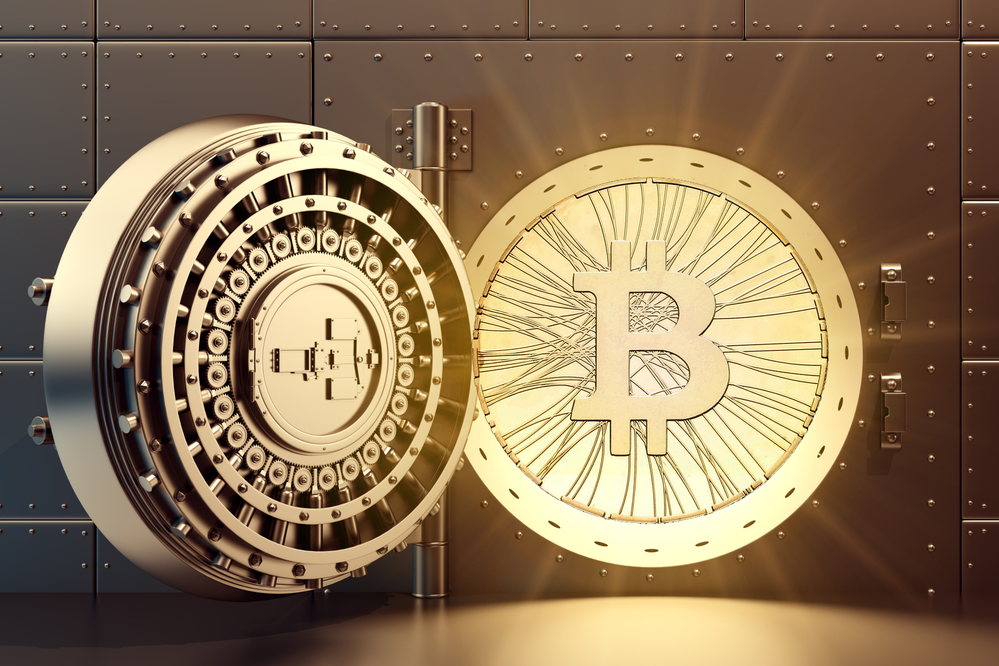
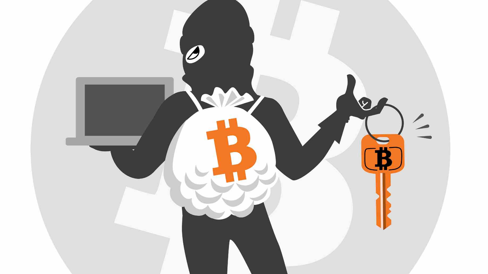
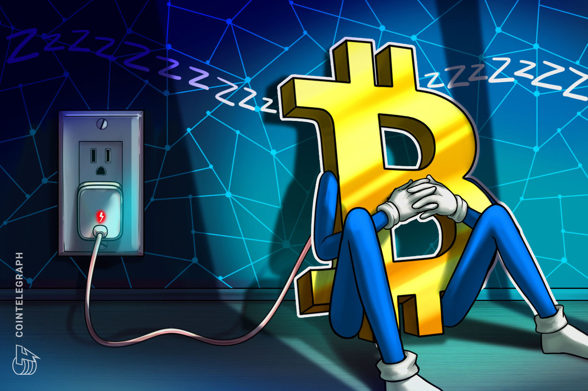
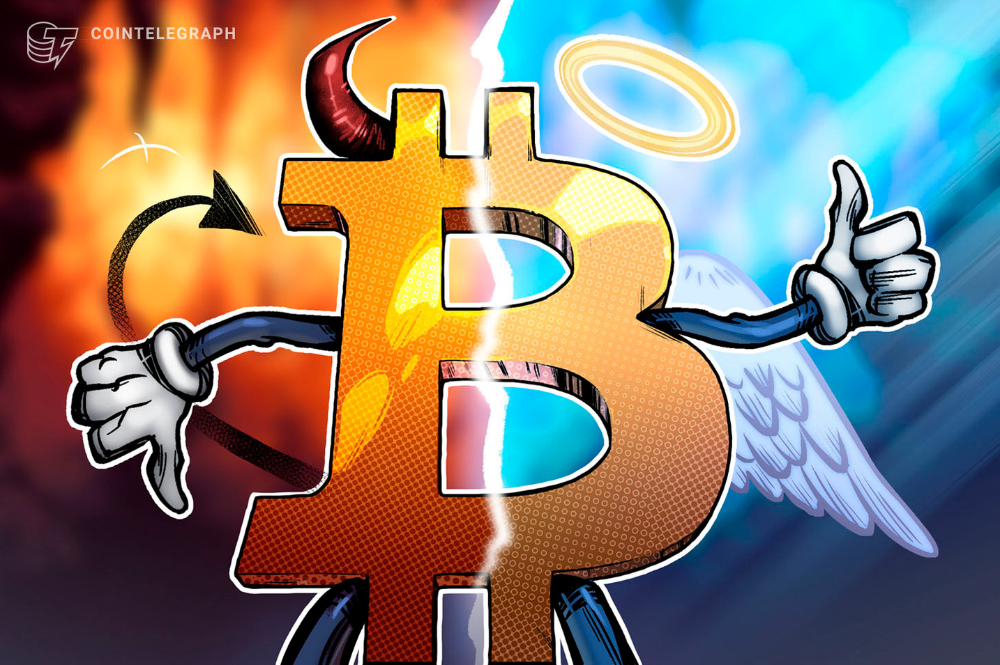

| La tecnología Bitcoin - el protocolo y la criptografía - tiene un sólido historial de seguridad y la red Bitcoin es probablemente el mayor proyecto de computación distribuida en el mundo. La vulnerabilidad más común es el fallo del usuario. Los archivos de la cartera Bitcoin que almacenan las necesarias claves privadas pueden ser accidentalmente borradas, perdidas o robadas. Esto es muy similar al dinero físico almacenado de forma digital. Afortunadamente, los usuarios pueden emplear prácticas de seguridad prudentes para proteger su dinero o usar proveedores de servicios que ofrecen buenos niveles de seguridad y garantía contra robo o pérdida. |  |
|  | Las reglas del protocolo y la criptografía empleadas para Bitcoin siguen funcionando perfectamente años después de su creación, lo cual es una garantía de que el concepto está bien diseñado. No obstante, se han detectado fallos en la seguridad y se han ido solucionando con el tiempo mediante cambios en el software. Al igual que cualquier otro tipo de software, la seguridad de Bitcoin depende de la velocidad a la que se encuentran y solucionan los problemas. A medida que se van descubriendo dichos problemas, Bitcoin seguirá madurando. A menudo hay malentendidos sobre robos y brechas de seguridad que ocurren en diversos intercambios y negocios. Aunque estos sucesos son desafortunados, ninguno de ellos envuelve al propio Bitcoin siendo hackeado, ni implican brechas en Bitcoin; al igual que el robo a un banco no significa que el dólar esté comprometido. Aún así, es preciso decir que unas buenas prácticas y soluciones intuitivas de seguridad son necesarias para dar a los usuarios una mejor protección de su dinero y reducir el riesgo de robo y perdida. Durante el transcurso de los últimos años, estas características de seguridad han sido rápidamente desarrolladas, como la encriptación del monedero, monederos offline, monederos físicos y transacciones multi-firma. |
|  | |
| No es posible cambiar el protocolo de Bitcoin tan fácilmente. Un cliente de Bitcoin que no cumpla las reglas, no puede imponer las suyas propias a los demás usuarios. En la especificación actual, no es posible incorporar el doble gasto en una misma cadena de bloques, ni gastar bitcoins sin una firma válida. Es por ello que no es posible generar cantidades incontroladas de bitcoins de la nada, gastar fondos ajenos, corromper la red o algo similar. Sin embargo, una mayoría de mineros podrían elegir arbitrariamente bloquear o revertir transacciones recientes. Una mayoría de usuarios también podría ejercer presión para que se adoptaran cambios. Ya que Bitcoin solo funciona correctamente con un consenso absoluto entre todos los usuarios, puede ser muy complicado cambiar el protocolo porque requiere que la inmensa mayoría de usuarios adopten el cambio, de manera que el resto de los usuarios no tenga más opción que aceptarlo también. Como regla general, es difícil pensar que un usuario de Bitcoin decidiese adoptar un cambio que pudiese comprometer su propio dinero. | |
|  | |
| Si, la mayoría de los sistemas basados en criptografía lo son, incluyendo los sistemas tradicionales de banca. Sin embargo, la computación cuántica aun no existe y probablemente por mucho tiempo. En el caso de que la computación cuántica pueda ser una amenaza inminente para Bitcoin, el protocolo podría ser actualizado para usar algoritmos post-cuánticos. Dada la importancia que esta actualización tendría, se puede asegurar que será analizado por los desarrolladores y adoptado por todos los usuarios de Bitcoin. | |